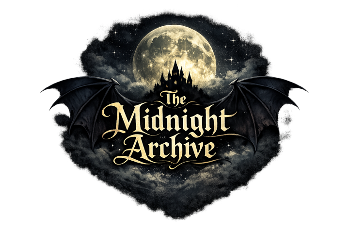

Where shadows tell stories and every riddle hides a secret.
An ever-growing collection of legends, riddles, and forgotten lore.
Riddle of the Day
Where to next
- Dark Fantasy LibraryVampire legends, forgotten myths and original articles.
- Character ArchiveThe immortals, monsters and hunters of legend.
- Battle ArenaLegendary matchups. Cast your verdict.
- Riddle VaultPuzzles waiting to be solved.
- Hall of DebatesQuestions with no easy answers.
- Archive Keeper’s JournalNotes on myths, immortality and forgotten stories.
Lost in the Shadows?
The Archive has grown. Consult the Archive Map to choose your path, or read About the Archive.
Quote from the Shadows
Dark Fantasy Library
Welcome to the hidden shelves: vampires, ancient legends, forgotten kingdoms and creatures that walk in the dark.
- The Origins of the Vampire MythThe ancient fears that gave birth to one of humanity’s oldest monsters.
- Character ShowdownWho would win in a battle of immortals?
- Featured QuestionIf you were offered immortality tonight, would you accept it?
The Origins of the Vampire Myth
Tracing the legends behind one of humanity’s oldest monsters.
“Every culture fears the darkness. Some simply gave that darkness a name.”
Long before vampires became the elegant immortals of modern books and television, they existed in whispers, legends and ancient fears. Nearly every civilization told stories of creatures that returned from the dead to feed upon the living, though their names and appearances differed.
In the folklore of Eastern Europe, the vampire was rarely charming. These beings were described as restless corpses, cursed souls, or spirits that rose from the grave to torment their families and villages. Illness and unexplained deaths were often blamed on them.
Many historians believe the myth grew from humanity’s attempt to explain the unknown. Before modern medicine, disease could spread through a community without warning. When several people died in quick succession, fear filled the gaps left by missing science. In some places, graves were reopened to search for signs that the dead had returned.
Over time, legends evolved. Ancient tales mixed with local traditions, creating countless versions of the vampire. Some drank blood, others stole life energy or preyed upon dreams. Yet they shared one idea: death was not always the end.
In the nineteenth century, Gothic literature changed the vampire from a mindless horror into a mysterious and intelligent immortal, whose elegance, power and loneliness still capture the imagination today.
Perhaps that is why the myth has endured. It asks our oldest questions. What if death could be defeated? What price would immortality demand? And if eternal life were possible, would anyone truly want it?
Would immortality be the greatest gift… or the oldest curse?
Character Archive
The legends, monsters and antiheroes that haunt myth and dark fantasy.
The Battle Arena
Where legends collide and only one leaves the shadows victorious. These are friendly debates for fans of dark fantasy.
The Riddle Vault
Welcome, Seeker. Solve each riddle before you open its answer.
The Hall of Debates
The oldest chamber of the Archive. Questions have no easy answers, so choose where you stand.
The Archive Keeper’s Journal
Hidden among the shelves are the keeper’s notes on myths, immortality and the questions that refuse to die.
Entry I: Why Do Vampires Endure?
Recorded under a moonless sky.
Every generation reinvents the vampire. Sometimes a monster, sometimes a tragedy, sometimes a mirror of human fear. But the truth is deeper: vampires endure because we never stop asking what immortality would cost.
Entry II: The Sound of Empty Castles
Recorded during a silent night in the Archive.
There is a sound old castles are said to make when no one is watching them. Not wind. Not wood. Something slower, like memory stretching through stone.
Entry III: Riddles Are Not Games
Recorded after solving an unsolved question.
A riddle is not meant to confuse. It is meant to reveal how you think. Every answer says more about the solver than the question.
The Book of Visitors
Travelers leave behind a thought, a warning or a fragment of wisdom. Entries are saved in this browser only.
The Archive Map
Every corridor leads to another mystery. Choose your path wisely.
- Dark Fantasy LibraryAncient legends, forgotten folklore and original articles.
- Character ArchiveMeet the immortals, monsters and hunters of legend.
- Battle ArenaWitness legendary confrontations and impossible matchups.
- Archive Keeper’s JournalNotes and reflections from the keeper of the Archive.
- Riddle VaultA collection of riddles waiting to be solved.
- Hall of DebatesWho would win? Which legend is strongest? Decide for yourself.
- Book of VisitorsLeave your mark in the pages of the Archive.
- About the ArchiveWhy this place exists.
🦇 About The Midnight Archive 🦇
The Midnight Archive is a digital sanctuary for lovers of dark fantasy, ancient myths, forgotten legends and impossible questions. It is a place where riddles are preserved, old stories are remembered, and debates about immortality, monsters and mystery never truly end.
📚 What You’ll Find Here
Within these halls lie collections of vampire lore, mysterious riddles, supernatural legends, and discussions about the worlds that have captured the human imagination for centuries.
🌙 The Curator’s Note
“Some say the Archive was built to preserve forgotten knowledge. Others believe it exists to hide truths that the world was never meant to remember. Whatever the reason, every visitor leaves with a new question… and very few leave unchanged.”